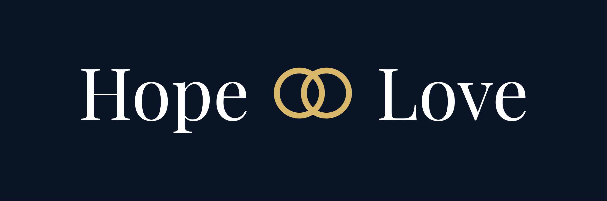
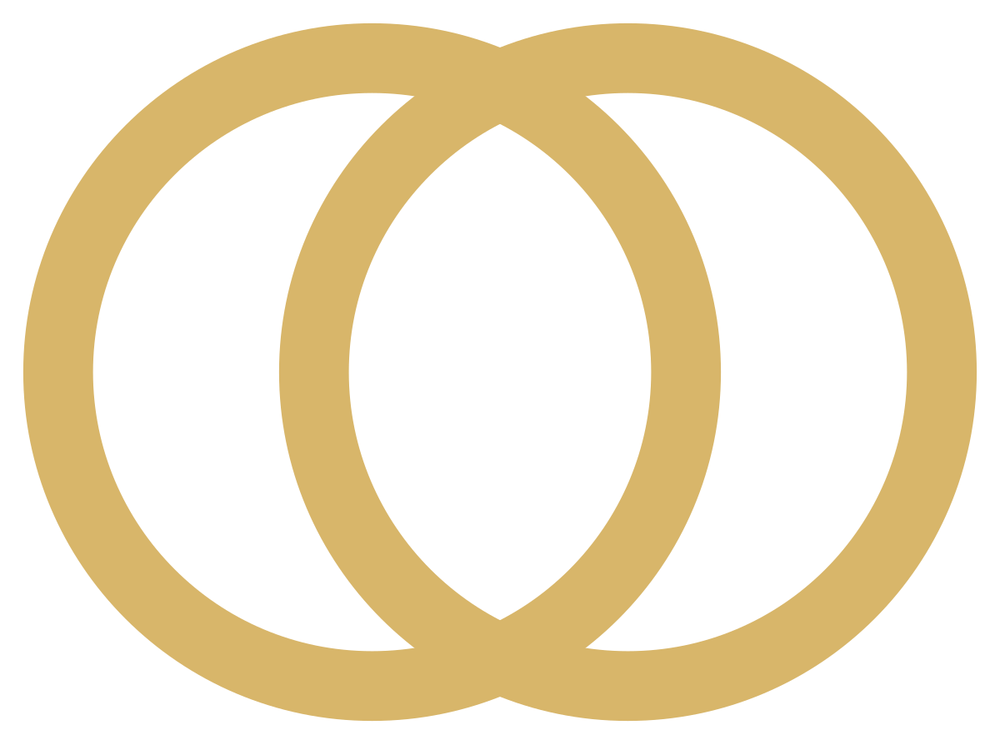
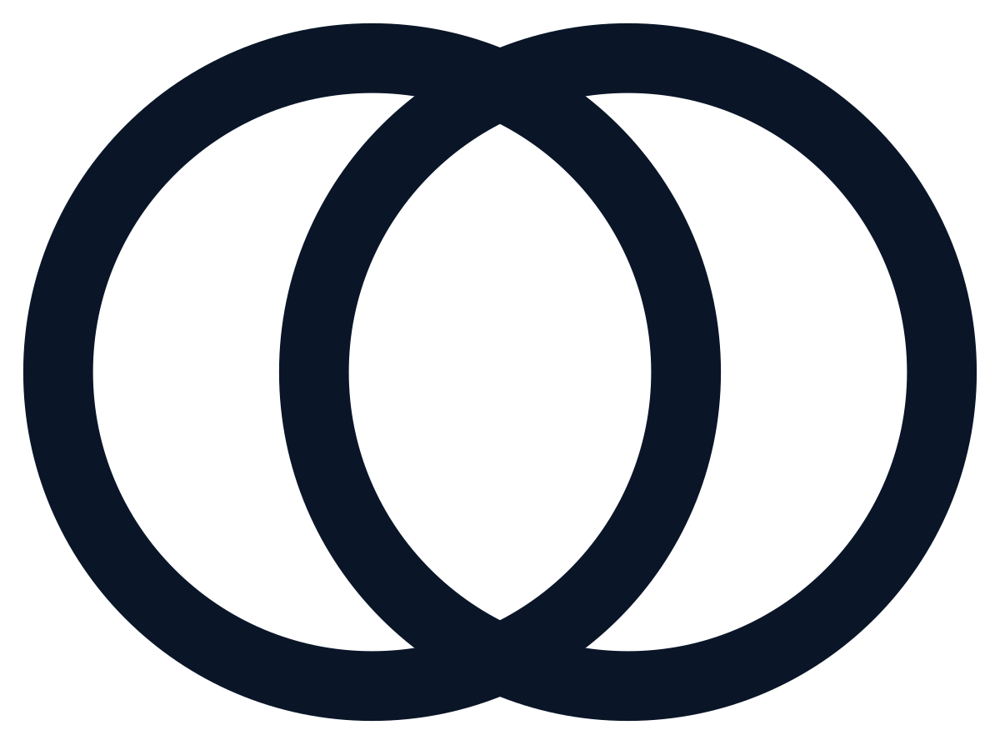

Logo files














Colours
Navy #0A1628
Gold #D8B66A
Ivory #F7F1E8
Blue #3F6F8F
Forest #294B3A
Clay #B97856
Charcoal #263238
Type
Wordmark and headings: Playfair Display (Regular). Body and small text: Inter. Both are free Google Fonts.
Usage notes
- Use the white wordmark on navy or dark photos; the navy wordmark on white or ivory.
- Keep clear space around the logo at least the height of the rings.
- The rings icon on its own is for small spaces: social profile pictures, favicons, stamps.
- Don't stretch, recolour outside the palette, or add effects.
Site by Click Shift Marketing